Hiroshima, Japan
広島の旅行者・外国人と地元の日本人をつなぐコミュニティ A community connecting international visitors and locals in Hiroshima
観光ではなく、一緒にする日常。
Not sightseeing — everyday life, together.
-Discover the world, Discover yourself-
誰かの人生に触れ、自分自身を見つめ直し、
新しい可能性を得られる場所。
A place to touch someone's life, rediscover yourself,
and find new possibilities.
名前に込めた意味
The meaning behind the name
モザイク — 違いが美しさになる
Mosaic — differences become beauty
バラバラな色のタイルが集まって、はじめて一枚の絵が完成する。言語も、文化も、バックグラウンドも違う。でも集まれば、一枚の美しい絵になる。
Tiles of different colors come together to complete a picture. Different languages, cultures, backgrounds — yet together, we become one beautiful picture.
For me, this symbolizes that every meetup should be different.
Question — 問いを持ち帰る
Question — take home a new question
参加するたびに、新しい「問い」が生まれる。好奇心こそが、人と人をつなぐ一番の入口。このモザイクに参加するたびに、新たな問いを持ち帰ってほしい。
Every meetup sparks new questions. Curiosity — "why?" and "how?" — is the best bridge between people. By joining with that mindset, you can absorb even more.
By joining with that mindset, you can absorb even more from the experience.
この活動を始めたきっかけ
How it all began
一人旅での経験、留学生との対話
Solo travel experiences and conversations with international students
旅に行くと多くの人に出会える。
ただ、地元の人と関わる、地元の日常を一緒に体験してみる、そんな機会は意外とないと感じた。観光地だけでなくその国の日常に触れ、文化に触れる——そんな機会がもっと手の届く範囲にあったらいいなと感じた。
また、多くの国の人と話していく中で、いかに自分が日本文化について、自分の国について無知かを思い知らされた。
日本に来る人たちの居場所になる。自分たちの国をより理解できる学べる場所になる。そういう場所を作りたいと強く思った。
Traveling lets you meet many people. But truly connecting with locals and experiencing their everyday lives — I realized that opportunity is surprisingly rare. I felt strongly that chances to touch the daily life and culture of a country, not just its tourist spots, should be more accessible.
Through conversations with people from many countries, I also came to realize how little I knew about Japanese culture and my own country. I wanted to create a place where people coming to Japan could find a sense of belonging, and where we could all learn more about our own roots.
日本全国にこの活動を広げる
Expanding this movement across all of Japan.
現在は広島県竹原市忠海町にて、
ゲストハウス事業を進行中。
Currently developing a guesthouse project in Tadanoumi, Takehara City, Hiroshima.
いずれはオンラインプラットフォームやアプリで全国の事業者やイベント参加者を、日本文化・人との出会いを中心として「繋ぐ」を実現したいと考えている。
Looking ahead, we aim to build an online platform and app that connects businesses and participants nationwide around Japanese culture and human encounter — bringing "connection" to life at scale.
日本と世界を繋ぐ
connecting Japan and the world
言語・文化・バックグラウンドを超えて、人と人をつなぐ場をつくる。
Creating a space where people connect beyond language, culture, and background.
新たな可能性を得る、居場所となる
discover new possibility · A place to belong
ここに来れば、新しい自分の可能性に気づける。そして、ここが「自分の居場所だ」と感じられる。
Here you can discover new sides of yourself — and feel like you truly belong.
自分自身を知る
discover yourself
多様な価値観と出会うことで、自分が何者かを改めて問い直す機会になる。
Encountering diverse perspectives gives you a chance to rediscover who you are.
1. 海外からの旅行者 International travelers
日本を訪れる旅行者に、本物の「日本」を私たちの手で伝える
Sharing the real Japan with travelers visiting from abroad — through our own hands.
2. 地域住民 Local residents
外国語のアウトプットの機会を提供する
旅行に行かずとも海外の人と交流できる場を提供する
Offering chances to use a foreign language and connect with people from abroad — without leaving Hiroshima.
3. 外国人労働者 Foreign workers
日常生活の中で新たな居場所を提供する
Creating a new sense of belonging within everyday life.
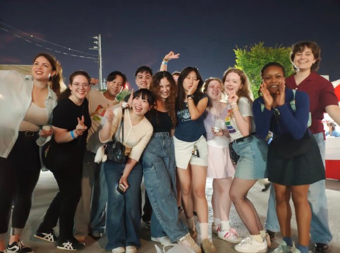
Matcha、朝ラン、DIY。特別な準備はいらない。
Matcha, morning runs, DIY. No special preparation needed.
3つの質問に答えるだけで、18の体験の中からあなたにぴったりの3つをご提案します。
Answer 3 questions and we'll suggest 3 experiences from our 18 options that suit you best.
書道、クリスマスパーティー、公園でのんびり、居酒屋——どの瞬間も本物。
Calligraphy, Christmas parties, parks, izakayas — every moment is real.
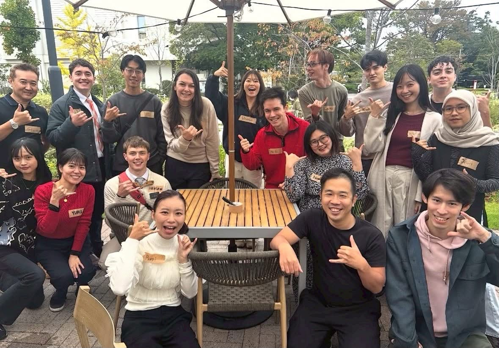
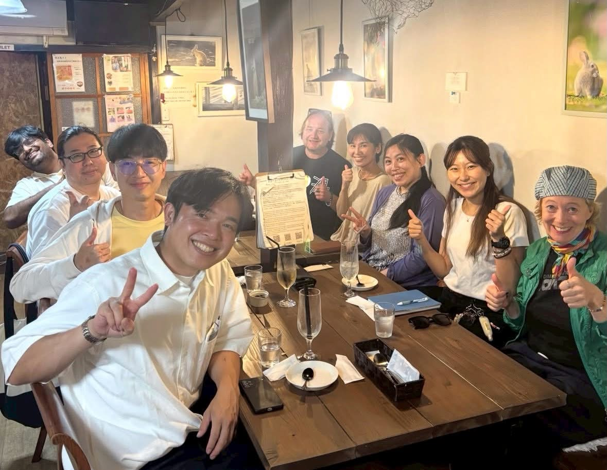
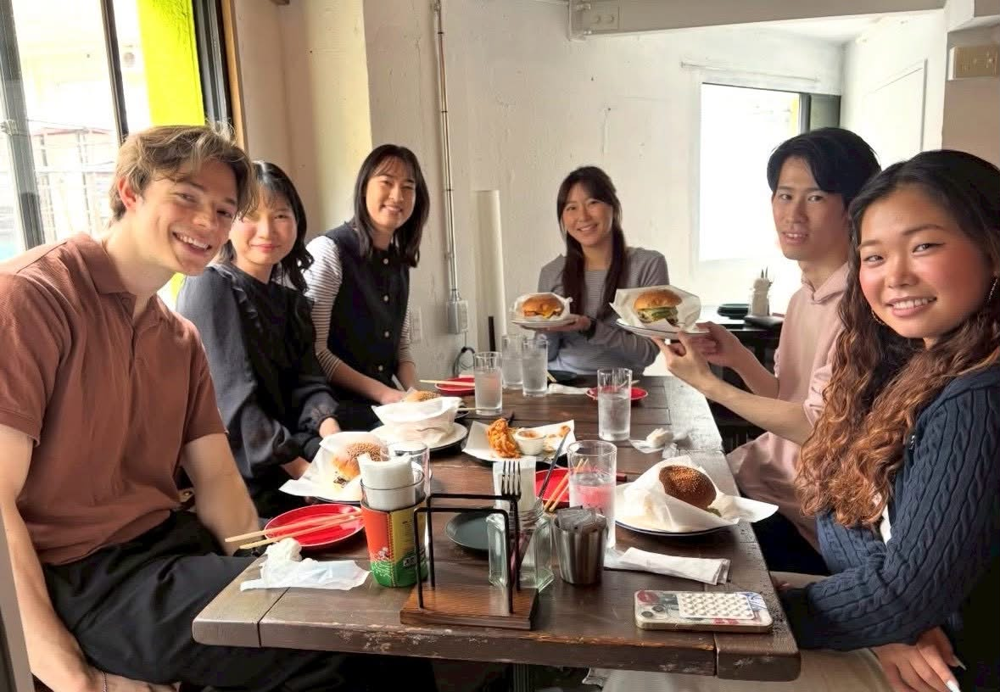
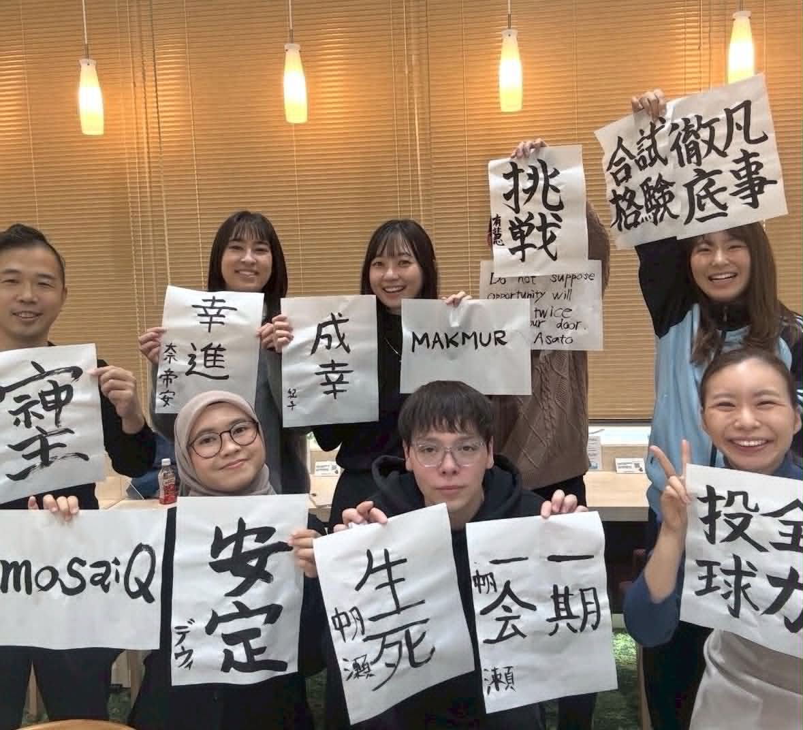
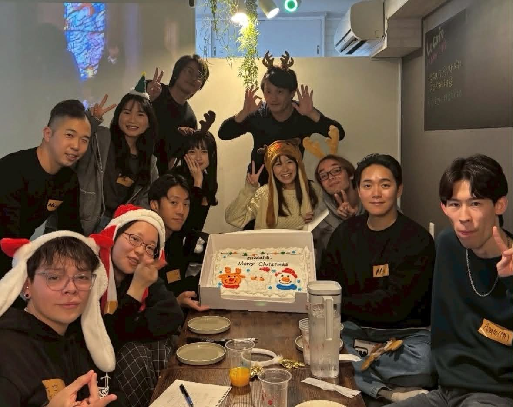
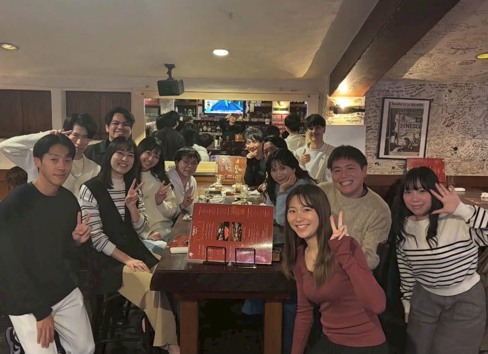
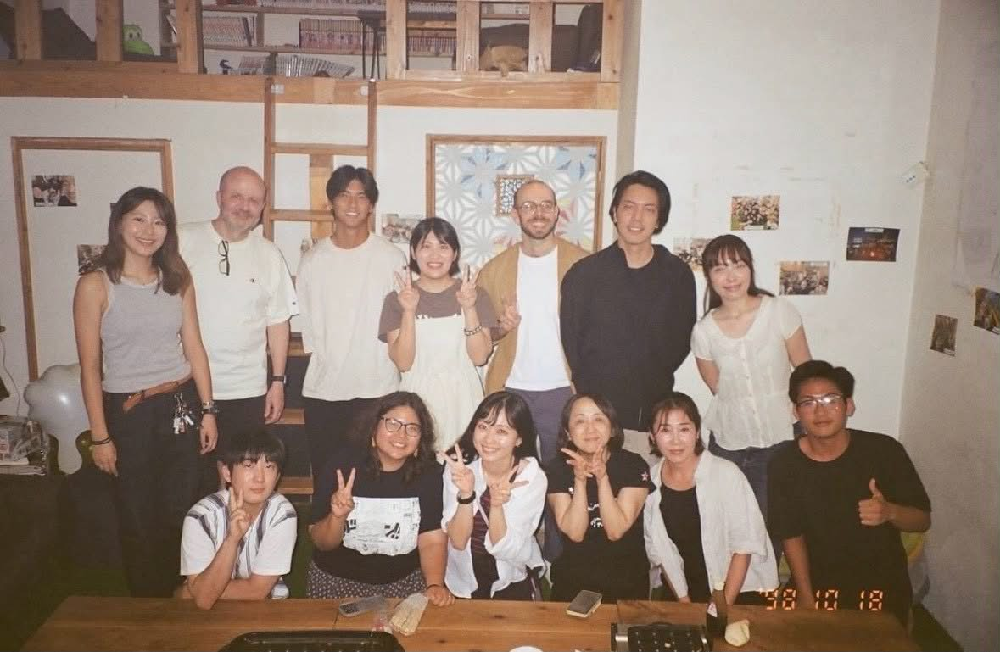
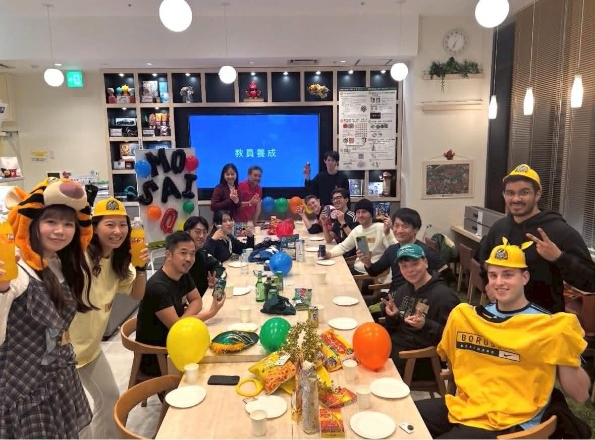
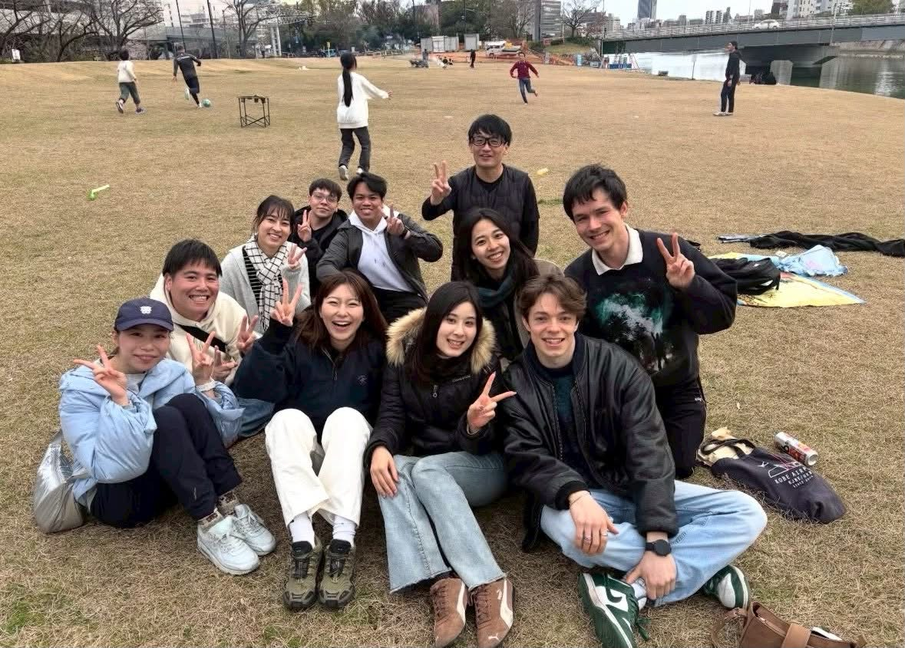
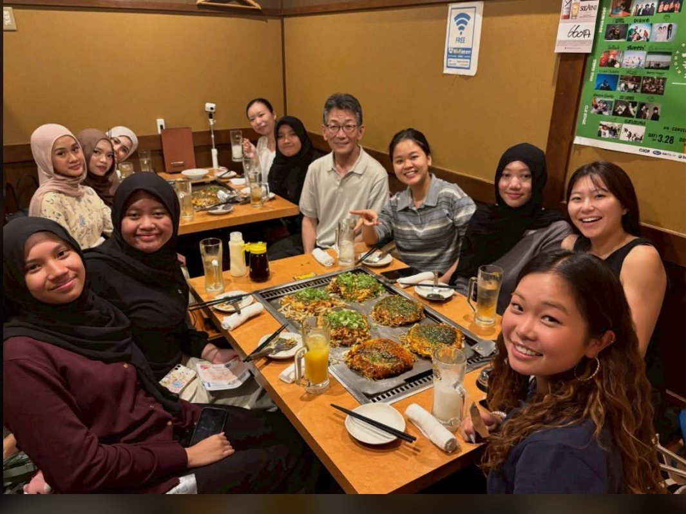
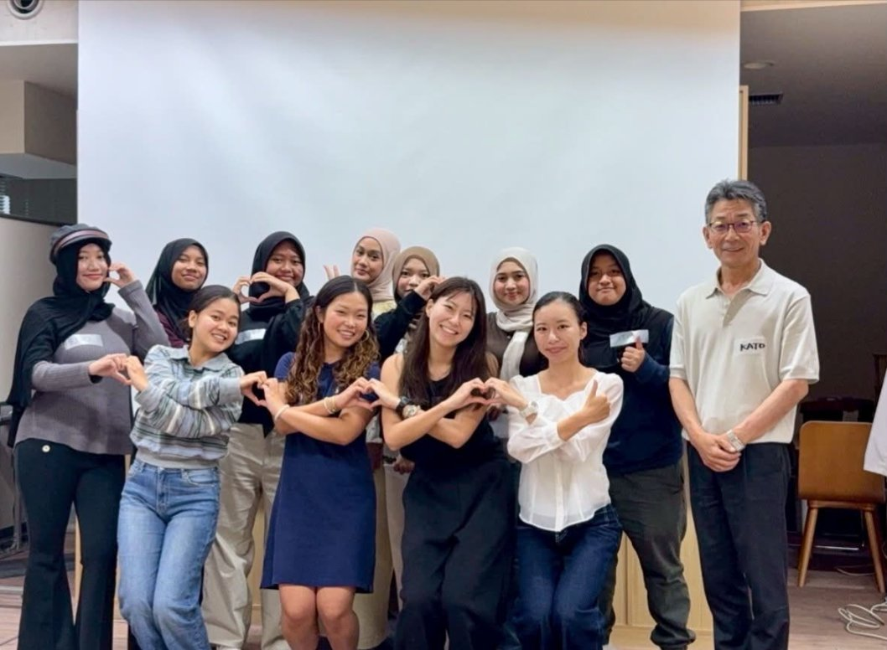
← スワイプまたはドラッグで次へ →
← Swipe or drag to browse →
初めてのイベントって、ちょっと怖いですよね。でも mosaiQ に来てくれた人は、みんな「つながりたい」という気持ちを持っています。その気持ちさえあれば、もう大丈夫。
Everyone who comes to mosaiQ shares one thing — the desire to connect. If you have that, you're already there.
so if you have even a little interest,
I'd love for you to join us.
Urara — founder of mosaiQ. / 広島在住、大学4年生
広島で培ったコミュニティを、もっと多くの人に届けるために。
Bringing what we've built in Hiroshima to more people across Japan.
広島から日本へ
Hiroshima to Japan
広島で培ったコミュニティモデルを全国に展開。各地の日常と世界をつなぐ拠点を増やしていく。
Expanding our community model nationwide — creating hubs that connect local life with the world.
ゲストハウス事業
Guesthouse project
広島県竹原市忠海町にてゲストハウス事業を進行中。旅行者が「滞在しながら日常に入り込める」場をつくる。
A guesthouse project is underway in Tadanoumi, Hiroshima — a place where travelers can stay and step into everyday life.
プラットフォーム化
Building a platform
いずれはオンラインプラットフォームやアプリで、全国の事業者・参加者を日本文化と人との出会いを中心として繋ぐ。
Building an app to connect businesses and participants nationwide around Japanese culture and human connection.
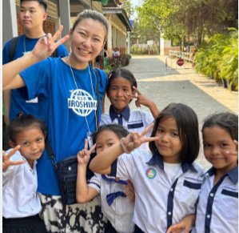
馬場 麗 Urara Baba
mosaiQ. 代表 · 広島在住 · 大学4年生
Founder of mosaiQ. · Hiroshima · 4th year student
言語も、文化も、バックグラウンドも違うからこそ、
集まることに意味がある。
It's precisely because we're different —
in language, culture, background —
that coming together means something.
広島には、世界中から旅行者や留学生が訪れます。でも、その人たちが地元の日本人と「日常」を共有できる場所は、思っているよりずっと少ない。ツアーじゃなく、観光スポットじゃなく、ただ一緒にMatcha を飲んだり、朝ランしたり、DIY したりする——そんな「ふつうの日常」を体験できる機会を作りたくて、mosaiQ を始めました。
Hiroshima welcomes visitors and students from around the world. Yet the places where they can share real everyday life with local Japanese people are far fewer than you'd expect. Not a tour. Not a tourist spot. Just drinking matcha together, going for a morning run, doing DIY — I started mosaiQ because I wanted to create spaces for exactly that kind of ordinary, genuine experience.
一人旅での経験や留学生との対話の中で、観光地だけでなくその国の日常に触れる機会がいかに少ないかを実感しました。多くの国の人と話す中で、自分が日本文化についていかに無知かも思い知らされた。日本に来る人たちの居場所になる、自分たちの国をより理解できる場所を作りたいと強く思いました。
Through solo travel and conversations with international students, I realized how rare it is to truly experience the everyday life of a country. I also realized how little I knew about my own culture. I wanted to create a place where people coming to Japan could feel at home — and where we could all learn more about our own country.
初めて参加するのが緊張する気持ち、すごくわかります。でも mosaiQ に来てくれた人は、みんな「つながりたい」という気持ちを持っています。ちょっとでも気になったら、ぜひ一緒にしましょう。
I know it can feel nerve-wracking to show up for the first time. But everyone who comes to mosaiQ shares one thing — the desire to connect. If you have even a little interest, I'd love for you to join us.
— Urara Baba, founder of mosaiQ.